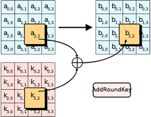

En este paso del cifrado, la sublclave es combinada con el state (la matriz de 4x4 que usa AES para ir realizando las transformaciones). Durante cada ronda, una subclave nueva se deriva de la clave principal usando el esquema de claves de Rijndael; cada subclave es igualmente una matriz de 4x4 para poder seguir realizando las combinaciones pertinentes con el state.
La subclave se obtiene combinando cada byte del state con el correspondiente byte de la subclave usando XOR.
